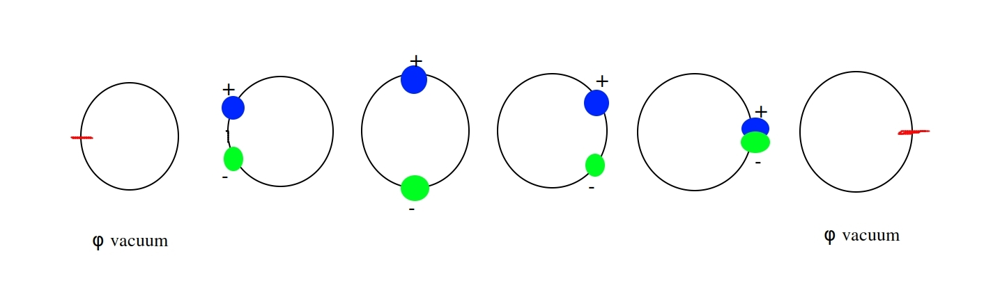
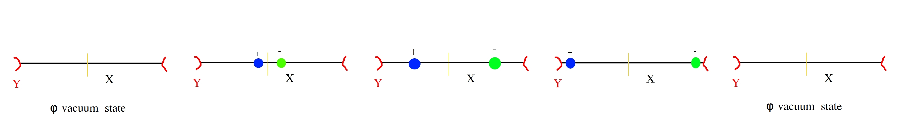

Dold-Thom theorem provides an important representation result for constructing singular homology. The essence is to replace singular homology on \(X\) with spherical maps on a configuration space \(A(X)\). One of the challenges in formulating DT is discovering the proper configuration space based on \(X\).
Configuration Spaces
Various configuration spaces are defined in the literature. The configurations typically have a physical interpretation based on hard disks, water droplets, electric charges, etc.. The basic models are:
- Hard disks (where collisions of point particles is prohibited);
- Hard disks with basepoint (where collisions are prohibited except with an annihilating basepoint);
- Water droplets (c.f. Gromov’s category of finite probability spaces [ref], where collisions are additive);
- Electrostatic droplets (e.g. signed Borel-Radon measures on \(X\), possibly with indivisible quanta, e.g. Millikan’s electron).
In example (1) the configuration space forms a monoid without identity, and the disks are not allowed to collide or intersect or join, just as hard disks cannot be joined together.
In example (2), a basepoint \(pt\) can be chosen on \(X\) and this basepoint serves as zero element, thus rendering the monoid into an additive topological group. However, as we commented above, a choice of basepoint is noncanonical when \(\pi_1\neq 0\).
The formal construction of earlier configuration spaces in the literature involves symmetric products with the diagonal removed, e.g. limits \(\lim_{N\to +\infty} (X^N - \Delta)/Symm_N\). Here \(Symm_N\) denotes the symmetric group on \(N\) letters. Example (3) arises from Gromov’s category of finite probability spaces, where the objects are so-called reductions \(f: \mu \to \nu\) between finite probability spaces \(\mu, \nu\). See (Gromov 2014, 2012).
The category of (4) consists of finite electroneutral configurations, where the objects are again reductions \(f:\mu \to \nu\). The proper formalization of (4) into a topological abelian group is provided below in the definition of \(A_0(X)\).
Basepoints
The difficulty with the standard configuration spaces is their choice of basepoint. The usual models are based on the category of pointed topological spaces, from which we define the pointed fundamental group. But homology and reduced homology are essentially basepoint-free. This article was motivated by the author’s desiring a basepoint-free version of DT’s theorem for which the long exact sequence of relative homology is naturally isomorphic to the long exact sequence in homotopy (see DT theorem below).
Dold-Thom’s Topological Group \(A(X)\)
We introduce the basic definitions:
(Def. 1) Let \(X\) be a topological space and \(G\) a topological group, e.g. \(G=\bf{Z}\). Let \(G(X)\) be the group of of finitely-supported \(G\)-valued distributions on \(X\), i.e. \[G(X):=\{ \sum n_x .x ~|~\text{only finitely many nonzero~} n_x \in G\}.\]
Let \(\epsilon_X: G(X) \to G\) defined by \(\epsilon_X(\sum n_x x)= \sum n_x\) be the canonical augmentation map.
Let \(A=A(X)=A_0(X):=\ker(\epsilon_X)\) be the kernel of the augmentation map.
We make some remarks:
If \(G\) is an abelian group, we define \(G(X)\) and \(A_0(X;G)\) in the obvious way. However the cases of \(G=\bf{Z}\) and \(G=\bf{Z} /2\bf{Z}\) appear to be cases of most interest, and henceforth we suppress the “\(G\)” from notation.
Morever because \(\bf{Z}\) is discrete the point charges (+), (-) are not infinitely divisible. This fails to be true if we replace \(\bf{Z}\)-valued distributions with \(\bf{R}\)-valued distributions, i.e. there exists unit charge quanta if and only \(G\) is discrete.
We observe that \(G(X)\) is a topological abelian group, with zero element \(\emptyset:=\sum 0 x=0\) corresponding to the zero distribution, and whose zero element is essentially the zero element \(0\) of \(G\). One might consider \(\emptyset\) the “vacuum state on \(X\)”. It follows that \(A_0(X)\) is a topological subgroup, consisting of all distributions with zero net charge.
One naturally sees \(A_0\) as a discrete version of all signed Borel-Radon measures \(\mu\) on \(X\) which integrate to zero \(\int_X 1. d\mu(x)=0\), i.e. which are orthogonal to all constant functions on \(X\).
The topology on \(A_0(X)\) implies recombinations of \(\emptyset\) satisfy local conservation of charge. Thus point charges (+) and (-) must be born from the same spatial position on \(X\). Therefore the recombinations require the point charges to continuously move on \(X\), and without “teleportation”. This is analogous to the distinction between the standard \(L^1\) and \(L^2\) optimal transport.
The essence of DT theorems is to represent homology groups in terms of homotopy groups on configuration spaces. In otherwords to identify the homology functors as homotopy functors. The basic idea of this article is that the vacuum state \(\emptyset\) serves as a type of “canonical basepoint on \(X\)”, and this enables a natural equivalence between the long exact sequences of relative homology and homotopy.
Relative Dold-Thom Group
It’s important to establish the relative version of DT. Let \(Y\) be a closed subset of \(X\). Our goal is to define a relative configuration space \(A_0(X/Y)\), and the key identification will be the canonical isomorphism \[A_0(X/Y)=A_0(X)/A_0(Y).\] In terms of net zero charged particle configurations, the idea is to view \(Y\) as a where excess charges can “ground out”. That is, spheres in the relative DT group \(A_0(X/Y)\) basepointed at \(\emptyset\) are recombinations which either neutralize away from \(Y\), or neutralize at \(Y\).
Here is the formal definition. If \(Y\) is a closed subset of \(X\), then \(G(Y)\) and \(A_0(Y)\) is a closed subgroup of \(G(X)\) and there is a canonical quotient \(G(X) \to G(X)/A_0(Y).\) Morever the augmentation map \(\epsilon_X\) canonically descends to the quotient as a type of augmentation map \[\epsilon_{ X / Y}: G(X)/A_0(Y) \to G, \] and we identify \[A_0(X/Y):=\ker(\epsilon_{X/Y}).\]
Dold-Thom’s Theorem
We follow the original approach of (Dold and Thom 1958), which theorems are stated in terms of natural quasifibrations between the configuration spaces.
Recall the definition of quasifibration:
- (Def. 2) A continuous map \(f: X\to Y\) between topological spaces \(X, Y\) is a quasifibration if the canonical inclusion of fibres \(f^{-1}(y)\) into the homotopy fibre of \(f\) is a weak homotopy equivalence for every \(y\in Y\).
Here is the main statement of the Relative Dold-Thom Theorem:
- (Dold Thom Theorem) Let \(Y\) be closed subspace of \(X\). Then the short exact sequence of topological abelian groups \[0\to A_0(Y) \to A_0(X) \to A_0(X /Y) \to 0,\] is a quasifibration inducing a long exact sequence of \(\emptyset\)-pointed homotopy groups \[\cdots \to \pi_{*+1}(A_0(Y), \emptyset) \to \pi_{*+1}(A_0(X), \emptyset) \to \pi_{*+1}(A_0(X/Y), \emptyset) \to \pi_{*}(A_0(Y), \emptyset) \to \cdots\] which is naturally equivalent to the long-exact sequence of relative homology groups \[\cdots \to \tilde{H}_{*+1}(Y) \to \tilde{H}_{*+1}(X) \to H_{*+1}(X,Y) \to \tilde{H}_*(Y) \to \cdots .\]
(Sketch of proof:) Following the original argument of Dold-Thom, the theorem reduces to verifying that the functors \(X\mapsto \pi_* A_0(X)\) satisfy the Eilenberg–Steenrod axioms. By a standard argument it follows that the functors \(\pi_* A_0\) and \(\tilde{H}_*\) are naturally equivalent.
Some remarks.
In terms of category theory, DT says that if \(G\) is an abelian group, then the functor \(X\mapsto \pi_*(A_0(X;G), \emptyset)\) is naturally equivalent to the reduced singular homology functor \(X\mapsto \tilde{H}_*(X;G)\) in the category \(TOP\) of basepoint-free topological spaces. Again, we emphasize that Dold-Thom Theorem is basepoint independant, with the vacuum state \(\emptyset\) serving as “canonical basepoint” on \(X\).
Formally the homotopy groups \(\pi_q(A_0(X), \emptyset)\) consist of homotopy classes of pointed continuous maps \(f: (S^q, pt)\to (A_0(X), \emptyset)\). Identifying \(pt\) with the point at-infinity, we can thus model homotopy classes as compactly supported \(q\)-parameter family of distributions on \({\bf{R}}^q\), where “compactly supported” means the distribution is equal to vacuum state outside a compact subset.
One immediate consequence of DT is that we find new topological models for the \(K(G,n)\) spaces. For example, we find \(K(\bf{Z}, 2)\) is modelled by \(A_0(S^2)\), as opposed to the usual \({\bf{C}}P^\infty\) model. Identifying \(S^2\) with the Riemann sphere \({\bf{C}} P^1\), we can identify \(A_0(S^2)\) with the set of rational functions on \({\bf{C}} P^1\), i.e. the space of meromorphic functions on the Riemann sphere. The correspondance from meromorphic functions to \(A_0(S^2)\) is given by assigning to every meromorphic function \(f\) it’s divisors, i.e. poles and zeros of \(f\). More generally we find \(K(G,n)\) modelled by \(A_0(S^n;G)\) for every integer \(n\geq 1\) and abelian group \(G\).

Naive Electrical Interpretation of Relative Dold-Thom
As a consequence of the Dold-Thom Theorem we have the following lemma:
- (Lemma) If \(Y\) is closed subset of \(X\), then we have canonical isomorphism \[H_*(X,Y) / image(H_*(X)) = \ker(H_{*-1}(Y) \to H_{*-1}(X)),\] where \(image(H_*(X))\) is the image of \(H_*(X)\) in the relative homology group \(H_*(X,Y)\), and the morphism \(H_{*-1}(Y) \to H_{*-1}(X)\) is induced by the inclusion \(Y\hookrightarrow X\).
Proof: Long exactness in DT’s theorem implies \[image(H_*(X))=\ker(\delta)\] and \[image(\delta)=\ker(H_{*-1}(Y) \to H_{*-1}(X)).\] But we have canonical isomorphism \[H_*(X,Y)/\ker(\delta)=image(\delta),\] and the result follows.
When the source space \(X\) is contractible, then we find the isomorphism \(H_*(X,Y) \approx H_{*-1}(Y)\) is canonical between homology groups. However the morphism is noncanonical on the singular chain groups. The construction of such a morphism requires a well-defined “filling” operation by which the cycles on \(Y\) can be filled to relative cycles on \(X\) mod \(Y\).
Here is our “electrical” interpretation of the above lemma. We see that relative cycles on \(X\) (mod \(Y\)) are represented either by:
- chains \(w\) which are already cycles \(\del w=0\) on \(X\), or
- chains \(w\) whose chain boundaries \(\del w\) are nontrivial on \(Y\) but null homologous in \(X\).
In terms of DT, this says that if \(Y\) is a ground reservoir for charges on \(X\), then recombinations of \(\emptyset\) will have parts which are recombinations in \(X\) separated from \(Y\) and other parts representing charges grounding out at \(Y\). For example, any excess charge on a conductive plate will either ground out at the boundary, or recombine and neutralize in the interior. For the relative homology groups, we can identify a component of \(A_0(X/Y)\) which is represented by “spontaneous” transports from \(\emptyset\) to the reservoir \(Y\). These relative cycles one the one-dimensional disk with boundary are represented in the figure below.

Conclusion
This is the first article of a three-part series on Dold-Thom. Our purpose here was to present the statement of the theorem, which allows an interesting spherical representation of homology cycles. There are many connections and ideas to develop, and which we will describe in future posts.
-JHM.